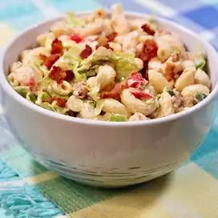

Macaroni

A delicious dish that most of people loves to eat. :)
Ingredients
- 1 (7 ounce) package elbow macaroni
- 1 pound bacon, diced
- 2 tablespoons lemon juice
- 1 large avocado, diced
- ½ cup mayonnaise
- ½ cup creamy salad dressing (such as Miracle Whip®)
- ⅓ cup tomato-based chile sauce
- ¼ cup lemon juice
- 2 teaspoons chicken bouillon granules
- 2 teaspoons white sugar
- 1 large tomato - cored, seeded, and diced
- ½ cup sliced green onion tops
- 6 cups shredded lettuce
Directions
- Step 1 - Bring a large pot of lightly salted water to a boil.
Cook elbow macaroni in the boiling water, stirring occasionally, until tender yet firm to the bite,
about 8 minutes. Drain and rinse with cold water. Set aside.
- Step 2 - Fry bacon in a large skillet over medium heat until browned and crisp, about 7 minutes.
Remove with a slotted spoon and drain on paper towels. Refrigerate when cool.
- Step 3- Sprinkle 2 tablespoons lemon juice over the diced avocado.
- Step 4 - Combine mayonnaise, creamy dressing, chile sauce, 1/4 cup lemon juice, chicken bouillon,
and sugar. Stir in the cooked macaroni, avocado, tomato, and green onions. Cover tightly and refrigerate until well chilled,
at least 6 hours. Mix in lettuce and the reserved bacon just before serving.